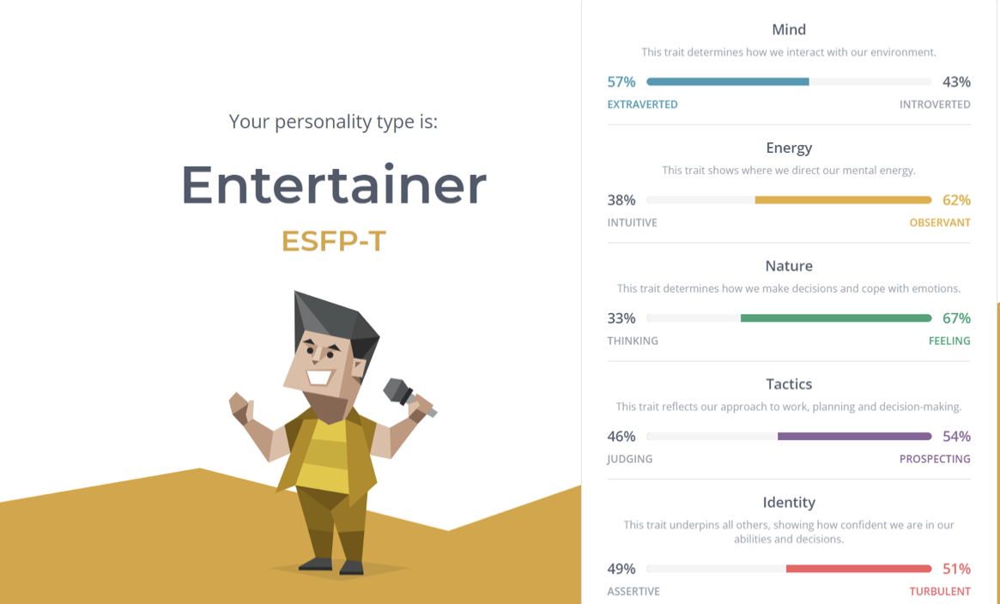
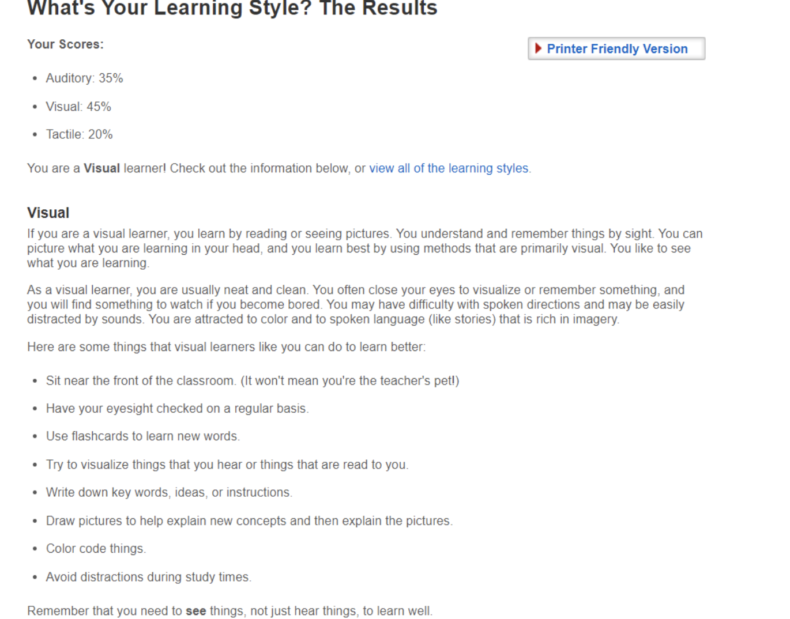
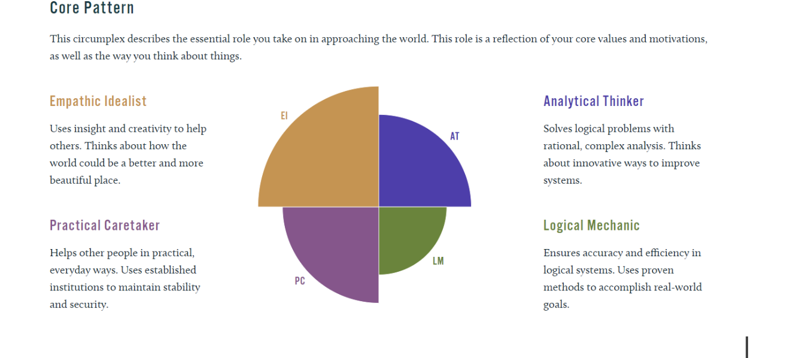

1. The Myers-Briggs Test
Figure 1. My Myers-Briggs test result
(Source: https://www.16personalities.com/free-personality-test )
I am an extrovert person, and my emotions have an impact on routine and activities.
2. Learning Style Test
Figure 2. My learning style test result
I am easily distracted by the sound when I study. It is difficult for me to concentrate on the lesson, so I usually review lessons in class at night.
3. The Big Five Test
Figure 4. My Big Five test result
(Source: https://www.truity.com/test/big-five-personality-test)
I have a high score in openness and empathic idealism but the analytical thinker is low. It shows that I am a creative person who will think of new ideas.